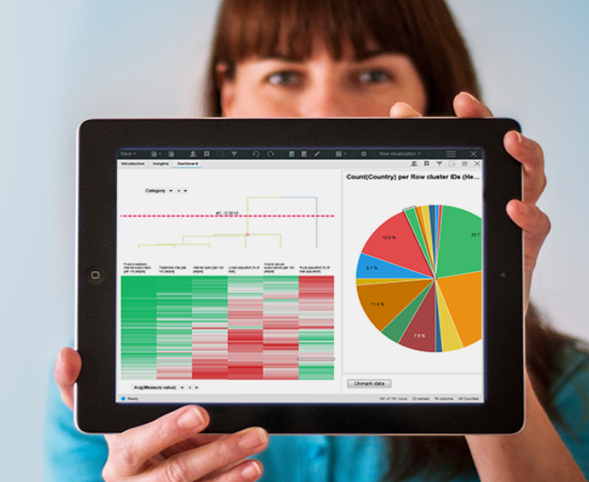

给大家介绍一款很不错的数据分析软件-Spotfire，可以试用其云服务平台。文件通过What-Why-How三步来介绍Spotfire，并且重点说明了数据报表与数据分析的区别，希望对大家有所帮助。
本文目录：
照例开头啰嗦几句……最早听到Spotfire是两年前了，2014年。在此之前公司BI的展示层用的是BO和Diver。从14年下半年开始一点一点的往Spotfire开始转移，主要转移的是原本通过Diver进行访问的一些内容，也就在那个时候通过在线视频的学习熟悉了Spotfire的一些基本功能。Spotfire给我带来最大的转变是对于BI的展示层的认识，从这么多年的报表角度转变为了数据分析角度。所以说Spotfire将提供的不仅是报表的展示，而更重要的是数据的分析(Reports VS. Analytics下面的内容也会展开说明一下这两者的区别)。那么就赶紧开始我们的正文内容吧，常规学习三步曲What-Why-How。
- Spotfire是什么
简而言之，Spotfire就是一个软件，是一个工具，是一个平台和也是一套解决方案，是一个可以通过搭建完整平台来提供数据展示和分析等解决方案的工具。这样说虽然直白了一点，但是应该更容易理解。在官方的介绍里将Spotfire产品线分为以下三部分：
Spotfire Desktop
直译为Spotfire桌面，是数据分析的极佳助手。Spotfire提供的桌面数据分析软件，可以用于数据的挖掘和探索，通过简单的操作能够发现和描绘数据背后的价值，官方说法是Spotfire是专为好奇的人设计的一款软件。
Spotfire桌面客户端提供以下基本功能：
Data to Dashboards in minutes - 简单几步就可以制作出丰富的图表或仪表盘来展现您的数据，可以直观的在不同图表之间比对您的数据。
See data differently - 通过简单的点击就可以查看您的数据在不同图表中的直观展现。
Work with multiple datasets - Spotfire提供丰富的数据连接，通过Spotfire客户端可以让您快速合并多个数据集，并在一个图表中展现这些数据。
Find hidden relationships in your data - 通过标记出您感兴趣的数据和或筛选掉一些不相干的数据，可以将数据背后的隐藏关系直观的暴露在您面前。
Capture insightful moments - Spotfire中的书签功能可以让您保存数据分析的瞬间结果，可以通过多个书签来实现复杂的数据分析的步骤追溯。
Tell a story with data - Spotfire提供的文本编辑器，可以给您的数据分析创建操作指导，插入图片，或是给图表添加描述，甚至可以创建复杂的操作步骤来引导用户一步一步完成数据分析的过程。
Spotfire Cloud
直译为Spotfire云，是Spotfire提供的SaaS(软件即服务)数据分析服务。通过Spotfire云，您无需安装任何软件就可以充分的使用Spotfire所提供的强大数据分析功能。
Spotfire云有以下特点：
Accessible, Actionable, Always-on Analytics Worth Sharing - 易访问，易理解，易操作，易分析。使用Spotfire云服务，您无需等待，因为无需安装，也无需管理，从而不会贻误数据分析的时机。通过Spotfire云服务您会得到一个即时的，直观的界面和简单的连接，让您实时的分析您的数据。Spotfire云服务提供网页端的分析工具，帮助您迅速采取行动，并且可以方便的将数据分析结果与他人分享。
Align and Conquer - 协作以征服！当您发现一个新的市场趋势或数据异常，Spotfire云提供的上下文协作功能可以让您快速的与同事或客户洽谈，而这一切都是基于数据的可视化分析。这些可视化的数据是便得沟通更畅通和透明，就可以为团队高效的做出正确的决策提供强有力的支撑。
Accelerate Insight to Action - 洞察之，迅速行动之。Spotfire云服务可以让您很容易地看到您团队的前进方向，无论白天还是夜晚，或是在世界任何地方。因为Spotfire提供的Web界面可以让每个人都轻松直观地创建和访问可视化数据，从而帮助团队高效的制定商业决定。
Spotfire Platform
直译为Spotfire企业级平台，是Spotfire为团队和组织的数据挖掘和分析所提供的解决方案。企业可以通过在已有的数据中心之上部署Spotfire平台，来使的用户更方便更高效的挖掘和探索数据的价值。

Spotfire企业级平台提供以下功能：
Broadest Data Connectivity - 更广泛的数据连接。通过企业级平台可以在Spotfire访问和整合企业现有的各方数据，可以整合历史和实时数据，结构化和非结构化的数据，内部的和外部的数据，甚至是基于云的数据，在此之上构建的可视化分析让您对您的业务有更全面的认识。
Comprehensive Analytics - 数据的综合分析。覆盖新手和高级用户都可以使用的综合数据分析功能，并使新手可以容易的进阶成高级用户。
Recommendations and Guided Analytics - 建议和指导分析。无论您是新手或是数据分析专家，构建快速的图表或仪表盘都是快速展开数据分析的最好方案。Spotfire平台提供一些内置的最佳实践或模版来帮助用户快速的构建数据分析图表。
Sharing and Collaboration - 共享和协作。Spotfire平台提供方便快速的分享功能，让您可以快速的将数据分析结果共享给您的团队，客户。同时可以在组织内统一数据来源和展示模版，让团队基于相同的数据和认识开展自己的业务。
Proven Scalability and Governance - 可扩展性和易管理性。Spotfire平台通过最简单的操作来达到最广泛的部署，并提供了高性能的自动化集中化管理平台。
Ok，到里对Spotfire应该有了一些基本的了解了吧，有一些朋友或许还有点绕，我这里再总结一下。其实对于Spotfire工具本身来说，其提供的数据分析功能通过安装Spotfire客户端就都能实现；而所谓的Spotfire平台就是包含了Spotfire服务器的企业级应用，这样所有的人通过自己桌面上的Spotfire所创建的数据分析结果都可以方便的保存和共享给企业里的其它人员，而因为有了服务器，也可以不用安装Spotfire客户端直接通过网页也可以使用一些基本的数据分析功能；而进一步Spotfire云服务就是Spotfire所提供的一个服务器，个人或企业可以将自己创建的数据分析结果通过这个云进行保存和分享。
- 为什么选择Spotfire
到这里为止还没有充分体现出Spotfire相比其它数据展现工具的优势，下面我就来谈一谈为什么我会觉得Spotfire是如此的好用。对于所有数据展示软件都提供的那些基本的功能，比如说可以有多种多样的数据源，可以制作丰富多彩的图表展现，这些Spotfire也都提供，也或许都有一些优势，如数据源构建方便快速，图表各类更丰富，个性化定制简单等，这些都不细说了，本文打算就谈最主要的一点，Spotfire的输出结果是数据分析，而以往所使用的其它工具输出的结果是数据报告。那么首先让我从数据报告和数据分析的区别开始谈起。
让我们从目的、任务、输出方式、交付和价值这五个方面来看一看数据报告和数据分析的区别。
目的
数据报告将原始数据转化为信息，而数据分析将数据和信息转化为洞察力。数据报告帮助企业监控他们的业务，并可以当业务发生超出预期范围以外的时候发出警告。良好的数据报告让企业的最终用户可以从中发现问题。而数据分析的目标是在更深的层次解释数据，并提供可行的建议来回答问题。通过执行数据分析的过程，用户可能会发现其它的问题，但我们的目标是要找出答案，或可测试至少可能的答案。所以数据报告的目的以显示为主而数据分析的目的在于解释为什么它正在发生，和告诉你可以做些什么。
任务
数据报告的任务大多是诸如创建、配置、整合、组织、格式化和统计，而数据分析的任务大多是检查、解释、比较和确认。有时候数据报告和数据分析的结果会交织在一起，但是作为数据分析团队就应该重点关注于非数据报告以外的那些任务。
输出方式
当你在看数据报告和数据分析结果时，他们表面上看起来会很相似 - 大量的图表，图形，趋势线，表格，统计数据等等。但是，在输出这些结果的方式上，数据报告和数据分析有很大的不同。数据报告一般是推着的方法，在很多企业里数据报告都是固定好格式和时间推送到用户的邮箱里，用户在收到报告后并采取适当的行动。与之相反，数据分析往往采用的是主动获取的方法，对于特定的数据分析都是由一个分析师用以回答特定的业务问题而进行的，它可以基于数据报告的结果来进行。一句话数据报告将信息推送给用户，而用户通过数据分析从这些数据报告中洞察出有业务有关的问题。
交付
正如上面一条说到的，数据报告所交付的主要是一些信息，这些信息可以是一些电子表格啥的，通过服务器定时定点的推送到用户的邮箱里。而数据分析所要交付的东西远不止这些，它包括了用户从数据中洞察出的对于企业业务的意见或建议，或是一些行动指南。
价值
如下图所示的多米诺骨牌，数据->报告->分析->决策->行动到最后产生价值，当中少了任何一块价值都无法体现。数据报告的价值在于将数据转换成可供数据分析的信息，而数据分析的价值在于将信息转换为对业务问题的回答和可供决策的建议。
举个简单例子来说明一下，数据报告可以回答的往往是“是什么，有多少”这样的业务问题，比如今年公司的利润多少，成本多少，是哪个产品线产生的利润最高，是哪个部门的成本最高等等，而数据分析可以回答的问题是“为什么？怎么办？”，比如为什么今年公司的利润增长了15%？为什么IT部的成本上升了20%？怎么样能够缩减IT部的成本？等等。
Spotfire之所以说是数据分析工具而不只是数据报表工具，主要体现在他的一些功能特性上，其中最重要的几点功能就是标记，筛选，以及图表之间的交互。而有了这么好的工具，我们在给用户实施的时候和以往也有很大的区别。之前在和用户沟通的需求的时候我们一般的问题的你们需要什么样格式的报表，报表的数据源是从哪里得来的？而使用Spotfire之后和用户沟通需求时我们的问题则变成了你们业务上遇到什么样的问题？问题涉及哪些数据？
所以随着企业的发展，积累了大量的数据之后，都有着让这些数据发挥其应有价值的迫切需求。从上图中的需求路线可以看出，想要数据更好的发挥价值光有数据报告是不够的，当中不能缺少数据分析这一步，而人为的数据分析虽然可以，但并不是长久之计，尤其是当数据量越来越大之时。这时候有Spotfire这样强大数据分析功能的工具来帮助企业进行数据价值的挖掘，相信会是许多企业的选择。
- 怎么样使用Spotfire云服务
通过Tibco Spotfire的官网，找到Spotfire Cloud，可以免费试用Spotfire云服务30天。
Spotfire云提供了比较多的例子来让新手熟悉Spotfire的使用，创建试用账户并登录后，可以在Library下面看到所有的内置文件夹：
其中Samples文件夹内就有许多例子：
我们打开Sales and Marketing，就可以开始感受和使用一个Spotfire的分析结果了，还可以通过右上角的Edit按钮进行编辑和修改哦：
缺点貌似没有中文版…
如果要详细的介绍Spotfire的功能话就长了，本文主要就是介绍个大概，重点是希望大家可以了解一下Spotfire这个可以提供在线数据分析的工具，以及可以了解到数据报告和数据分析的区别。对于个人来说试用期过后200美金一个月的租金有点贵啦，对于企业来说应该算是可以接受的吧。